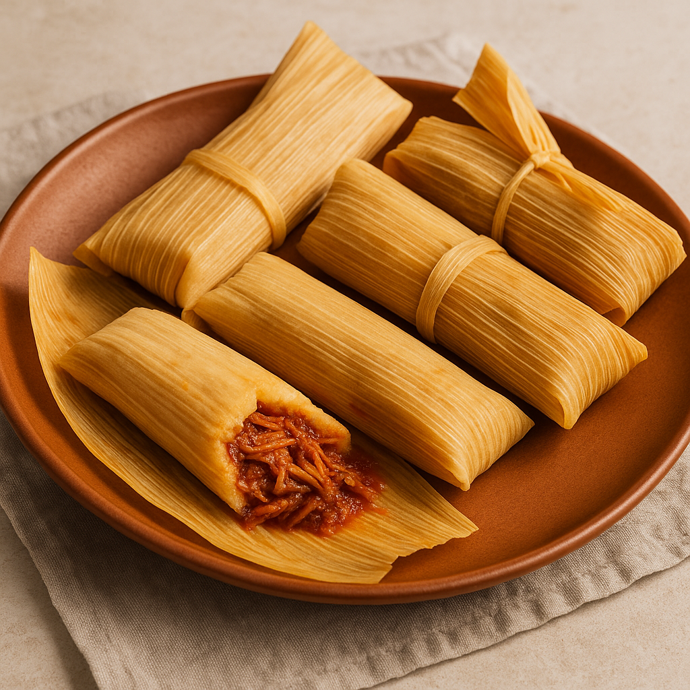

Traditional Pork Tamales
Ingredients
For the pork
- 3-1/2 lbs pork shoulder
- 10 cups water
- 1 medium onion, quartered
- 3 garlic cloves, minced
- 1-1/2 teaspoons salt
- 4 cups Red Chili Sauce
For the masa & assembly
- 3/4 cup shortening
- 6 cups masa harina
- 2 teaspoons baking powder
- 2 teaspoons salt
- Reserved pork cooking broth (about 6 cups)
- 50 dried corn husks (about 8 inches long)
Directions
- In a 5-quart Dutch oven, bring the pork, water, onion, garlic, and 1-1/2 teaspoons salt to a boil.
- Reduce heat and simmer, covered, for about 2-1/2 hours, or until the meat is very tender.
- Remove the meat from the broth and allow both meat and broth to cool slightly.
- Shred the meat using 2 forks, discarding excess fat.
- Strain the broth and reserve 6 cups.
- In a large saucepan, heat the red chili sauce, add the shredded meat, and simmer, covered, for 10 minutes. Remove from heat.
- To make the masa, beat the shortening on medium speed in a large bowl for 1 minute until fluffy.
- In a separate bowl, stir together the masa harina, baking powder, and 2 teaspoons salt.
- Alternately add the masa harina mixture and reserved broth to the shortening, beating well after each addition, until the dough is soft and spreadable.
- Meanwhile, soak the corn husks in warm water for at least 20 minutes. Rinse to remove any corn silk and drain well.
- To assemble each tamale, spread about 2 tablespoons of masa in the center of a corn husk, leaving space at the top and bottom.
- Place about 1 tablespoon of the pork and sauce mixture down the center of the masa.
- Fold in the sides of the husk, then fold up the bottom to enclose the filling.
- Place a mound of extra husks or a foil ball in the center of a steamer basket set inside a Dutch oven.
- Lean the tamales in the basket, open side up, arranging them snugly.
- Add water to the Dutch oven to just below the basket.
- Bring the water to a boil, then reduce the heat to maintain a gentle simmer.
- Cover and steam for about 40 minutes, adding more water as needed, until the masa is firm and pulls away easily from the husk.
Nutrition
Yield: about 50 tamales
Serving Size: 1 tamale
Calories: 290
Fat: 15 g
Carbs: 24 g
Protein: 14 g